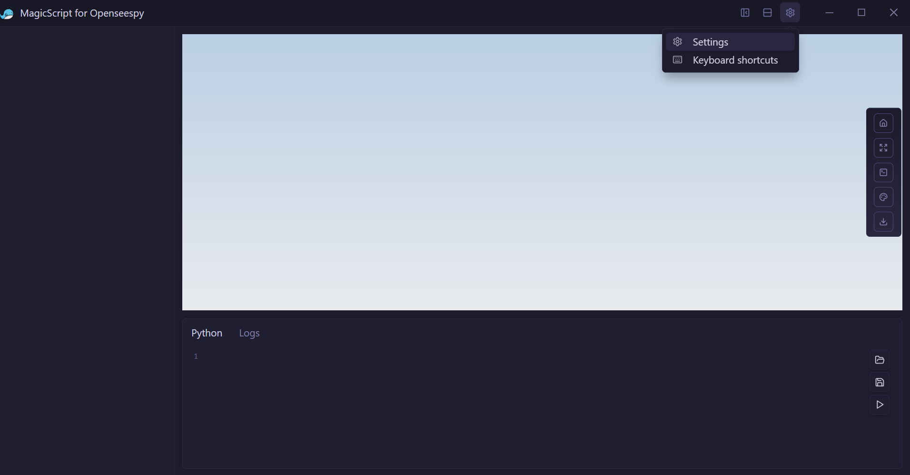
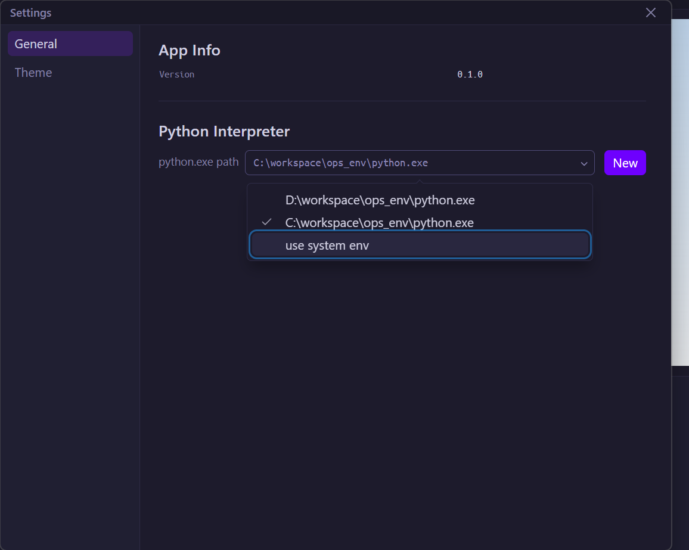
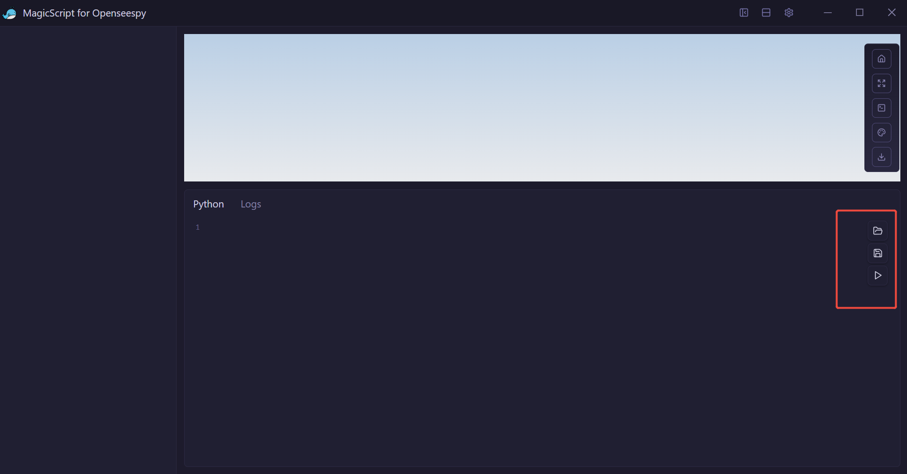

安装与使用
安装
目前只提供windows安装包。双击安装程序即可安装。
配置Python环境
安装好之后首先要配置Python环境，让MagicScript知道使用哪个Python运行脚本。配置入口如下：  打开之后如下： 
如果你的Python环境在环境变量里，可直接使用use system env。如果没有请指定python.exe的路径。
运行脚本
提供openseespy脚本文件打开、保存、执行三个按钮。用户自己的openseespy脚本不用做任何修改，即使带有matplotlib绘图命令也可直接运行无需修改。但带绘图的代码会卡住，等python代码执行结束之后才能看到模型本身。 